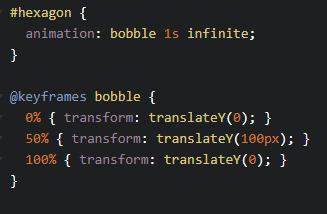

To Do Today:
-
Syntax
Configure a CSS animation and the various parameters that are needed
-
Keyframes
Define a series of keyframes that spell out changes to an element's visual properties
-
Design
Design keyframe-based animations that incorporates a variety of CSS properties
Transitions are a like a saw; animations are like a power saw.
An animation can act like a transition, but typically animations has multiple steps...and is better in coordinating multiple events.
Sarah Drasner.
Animating the Web with CSS and JavaScript
Why keyframe animation?
- Can repeat x times, or loop infinitely
- Self starting: Doesn't require trigger like transition
- Alternating: Can make it go from beginning to end or vice versa
- Grouping: Each animation can change multiple properties
@keyframes animation

- 1. Define the animation using keyframes
- 2. Assign it to a specific element (or elements)
1. Define the animation using
@keyframes with a name
Keyframes are a list of breakpoints describing what should happen over the course of the animation
animation-name specifies the name of the @keyframes
@keyframes name-this { }
It's important to name your keyframe block, otherwise you can never use it.
See the Pen css @keyframes animation by A.V. (@avcoder) on CodePen.
1a) Define
@keyframes structure with name
@keyframes insert-name {
}
1b) Declare visual changes via
0% 100%
@keyframes launch { 0% { transform: translateY(0px); } 100% { transform: translateY(-300px); } }
Can also use keywords
from { ... } to { ... }
2). Assign it to a specific element using keyword
animation
@keyframes launch { ... } #rocket { animation-name: launch; animation-duration: 2000ms; animation-timing-function: ease-out; animation-delay: 0s; } // Could combine above using shorthand 'animation:'
animation: launch 2000ms ease-out 250ms
Does it have to be in this order?
Quick 1 minute exercise: Convert the shorthand animation to the longhand version
Keep the above codepen open throughout today's class
Challenge - intro to @keyframes:
Recreate the "A long time ago..." Star Wars intro screen
transition vs. animation
transition-property: color;
transition-duration: 2s;
transition-timing-function: ease-in;
transition-delay: 0.5s;
animation-name: bobble;
animation-duration: 1s;
animation-timing-function: ease-in;
animation-delay: .1s;
but wait... animation has more properties
animation-iteration-count: 1 | 2 | ... | infinite;
animation-fill-mode: forwards | backwards | both | none;
animation-direction: normal | reverse | alternate | alternate-reverse;
animation-play-state: paused | running;
animation-iteration-count
Optional property that configures the number of times the animation should repeat.
Default is set to 1; use infinite to never stop. Try 2, 2.5, infinite
See the Pen ios wobble by A.V. ( @avcoder) on CodePen.
Challenge - animation-iteration-count
Recreate iOS's wobble effect
{kind=link}
animation-fill-mode
Optional property that configures what values are applied by the animation before and after it is executing. (Does it retain its 0%/100% property before/after animation starts/ends?)
Default is set to none.
animation-direction
Configures whether or not the animation should alternate direction on each run through the sequence or reset to
the start point and repeat itself.
You need more than 1 iteration to see effect.
Default is set to normal.
See the Pen animation-direction by A.V. ( @avcoder) on CodePen.
Challenge: animation-direction
Make switch move from right to left
See the Pen animation-play-state sticker by A.V. ( @avcoder) on CodePen.
Challenge - animation-play-state
Make image spin upon hover
Do In-class Exercise 5 + Break
(15mins) + (15mins)
* * *
Did you know?
Restarting CSS Animation
With CSS animations (ala @keyframes) it's not as easy as you might think to "restart" it.
Challenge - multiple changes per breakpoint
Recreate the Star Wars logo fadeout
See the Pen animation - from to by A.V. ( @avcoder) on CodePen.
Can have multiple keyframe sequences per animation
Add another set of keyframes called FadeInOut
See the Pen animation-delay + 3D by A.V. ( @avcoder) on CodePen.
Challenge - 3D + animation-delay
Make letters rotate one after another
Summary:
-
You've now learned how to configure an animated sequence by setting up the animation properties on the element in question, then building an @keyframes rule that defines specific states in the animation.
-
The properties that can be animated are the same as those that are supported by CSS transitions.
-
Next up is Module 6, where we will learn about using JavaScript instead of CSS to produce some useful motion graphics effects.
Do Inclass Exercise 5
until end of class
* * *
Did you know?
References
- lynda.com - CSS Animations with Val Head
- lynda.com - Motion Design with CSS with Rachel Nabors
- Kirupa Chinnathambi, Creating Web Animations, O'Reilly 2017
- https://dev.to/christopherkade/developing-the-star-wars-opening-crawl-in-htmlcss-2j9e